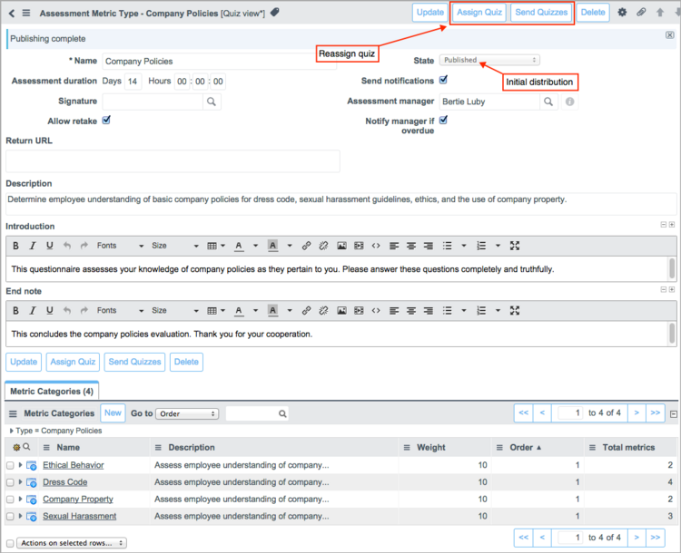

Creating Quizzes with Forms
Contents
1 Overview
As an alternative to the ServiceNow Quiz Designer, you can create a complete quiz using records in the Assessment application. All the elements of a quiz, the categories, questions, and answers, are stored in tables used by the assessment engine and are displayed in quiz views of these tables. Users creating quizzes in the Assessment application must have the assessment_admin role.
The best practice for creating a quiz using assessment forms is to follow the procedures in the order shown here:
- Create the quiz.
- Set up the categories.
- Create the questions for the quiz.
- Create the answers for the questions.
- Distribute the quizzes to recipients.
| |
Note: The recommended method of creating and editing quizzes is to use the quiz designer, which provides a single, intuitive interface for creating and editing quizzes quickly. If you determine that you need to add specific features to your quiz not offered through the quiz designer, you can do so by using some of the specific procedures described here. |
2 Creating Quizzes
A quiz in the assessment tables is known as an assessment metric type. To access this table from the Quizzes application, navigate to Quiz Management > Quizzes and create a new record (see table).
{kind=link}
| Field | Description |
|---|---|
| Name | [Required] Name of the quiz. |
| Assessment duration | Length of time recipients have to complete their assigned quizzes, starting from the time the quiz is generated. The assessment duration sets the Due date. The default duration is 14 days. |
| Signature | [Optional] Acknowledgement by a quiz recipient of requirements, admonitions, or expectations related to a quiz. For more information, see Signatures. |
| Allow retake | Check box for allowing users to modify their answers to a completed quiz. A quiz that allows retakes remains in the user's My Assessments & Surveys queue until the due date. |
| Return URL | Destination address of a web page that is presented to users after they submit a completed quiz. When a return URL is configured, the End note content is not displayed to recipients. |
| State | [Read-Only] Status of the quiz: Draft or Published. Until a quiz is published, it cannot be sent to recipients. Publishing the quiz sends it to the assigned users in each category. |
| Send notifications | Check box for enabling notifications to the recipients of this quiz. |
| Assessment manager | Manager for this quiz. The system notifies the assessment manager when responses for this quiz are past due. Managing assigned quizzes is the only responsibility for this user. |
| Notify manager if overdue | Check box for sending email notifications to a user's manager when that user fails to submit an assigned quiz before the due date. |
| Description | Helpful information about this quiz, including its purpose. |
| Introduction | Introductory content to display on quiz questionnaires. You can add a company logo, a welcome message, or background information about the quiz. For general information about HTML fields, see Using HTML Fields. You may need to configure the form to see this field. |
| End note | Content that is displayed to recipients after they submit a completed quiz. You can add a thank you message, follow-up instructions, or other applicable information. You may need to configure the form to see this field. End notes are not displayed if a Return URL is specified. |
3 Setting Up Categories
A category represents a theme for evaluating a specific element of the quiz topic and contains questions pertaining to that theme. When you create a quiz, the system automatically creates a default category with the name of the quiz. You can use this category, modify it, or create additional categories as needed. Categories are records in the Quiz view of the Metric Category table.
Categories have weighting values that contribute to the overall score for the quiz. By default, all categories are given a weighting value of 10. You can assign any weight to your categories. To have any results, a category must contain scored questions.
You can create a new category or edit an existing one from the Metric Categories related list of a quiz record.
{kind=link}
3.1 Category Users
Category users are the recipients of the questions for each category. A category can have one or more assigned users, and the same user can be assigned to more than one category. When the system distributes a quiz, it sends an email notification, if configured, to the category users and creates a link to the appropriate questionnaire in their assessments and surveys portal. Users can only answer questions attached to their assigned categories.
To select users for a category, select the Users related list in a category record, and click Edit.
{kind=link}
4 Creating Questions
A category can have multiple questions associated with it. Each question can only be associated with one category. Each question has an answer data type that determines how recipients answer the question. Questions are records in the Quiz view of the Assessment Metric table.
To create questions, open a category record and create a question record from the Assessment Metrics related list. Alternatively, you can navigate to Quiz Management > Questions and create a new record (see table).
| |
Warning: When you create a Choice or Likert Scale question, you must reopen the Assessment Metric form after you submit it to create answers. If you distribute a questionnaire without creating the answers for questions with these data types, recipients are unable to answer the questions. If the questions are mandatory, the recipients are unable to submit their questionnaires. |
{kind=link}
| Field | Description |
|---|---|
| Name | [Required] Name of the question. |
| Category | [Required] Category the question belongs to. The system automatically populates this category if you create a new question from the Metric Category form.
Note: You cannot change the category if the Depends on field is set or if another metric depends on this metric. |
| Method | Setting that determines how to use the question.
Note: If you select a Data type that is incompatible with the selected Method, the system automatically changes the Method to the correct value. |
| Weight | Numeric value that represents the importance of this question relative to other questions in the same category. By default, the weight is 10. For weighting suggestions, see Weighting Metrics and Metric Categories. This field is available and required unless the Data type is Date, Date/Time, or String. These data types are not included in results calculations. |
| Order | [Required] Numeric value that determines the order of the question in the category. The question with the smallest order value appears as the first question in the category's section. By default, the order is 100. Note: It does not matter which order value you use for metrics with the Script method, because they do not appear on questionnaires. |
| Active | Check box that determines whether this question appears on quizzes. If a question is inactive, it does not appear on quizzes generated after the question becomes inactive. |
| Mandatory | Check box for requiring users to answer the question. Users cannot submit questionnaires until they provide valid responses to all mandatory questions, which are denoted by a red field status indicator.
This field is available only if the Method is Assessment, the Depends on field is empty, and the Data type is not Checkbox. |
| Allow not applicable | Check box for including Not Applicable as a possible answer for this question. Users can select Not Applicable if they do not have sufficient information to respond to a question. User responses of Not Applicable are excluded from results. |
| Question | |
| Question | The question that is displayed in quizzes. Enter a clear, straightforward question that is easy to understand. |
| Details | Information about the question and what it evaluates. Include details that help users understand how to answer the question or when you need HTML enhanced details for your question. You can create HTML text in this field with the WYSIWYG editor, such as embedding links and images. |
| Depends on | An existing question that this question is dependent on. You can select Checkbox, Choice, Likert Scale, Template, and Yes/No questions from the same category as this question. Then use the Displayed when field to set the conditions for displaying this question. The system prevents the creation of recursive dependencies between questions. For example, if Question A depends on Question B, Question B cannot depend on Question A. |
| Question Type | |
| Data type | [Required] Format of the expected response data. See the table of data types for details.
Note: You cannot change the data type if another question depends on this question. |
| Randomize answers | Check box for displaying the possible answers for this question in a random order whenever the question appears. Answer preference is sometimes influenced by the order in which answer options appear, which can result in biased results. Randomizing answer options can help prevent this bias. This check box is available only if the Data type is Choice or Likert Scale.
Note: Randomizing answer options for certain questions may make those questions confusing for users. In general, only randomize answer options that do not follow a logical order. |
| Scale definition | Setting that determines whether lesser or greater numerical values equate to a good score in quiz result calculations. Select Low if lesser numerical values are better. Select High if greater numerical values are better. The default value is High. This field is available and required unless the Data type is Date, Date/Time, or String. The results for these data types are not included in results calculations. When the Scored check box is selected, the scale value is set to High and the field is hidden. Note: For information about how to set the scale definition for data types that do not require you to set a numerical value, see Data Types. |
| Min | Lowest numerical value that can be used as an answer option. This field is available and required only if Data type is Number, Duration, or Percentage. |
| Max | Highest numerical value that can be used as an answer option or scaled value. This field is available and required if Data type is Number, Duration, or Percentage. |
| String option | Setting for the appearance of a string field in a question. This field is available when the question type is String. The string options are:
|
| Scored | Check box for using answers in scoring the category results and showing them in the quiz results. Scored questions are available for these data types:
Selecting this check box hides the Scale definition field and sets the value in that field to High. |
| Correct answer | [Required] Desired answer to a scored question. This field is available when the Scored check box is selected. |
| Template | Answer template to use with this question. This field is available when the Data type is Template. |
| Related List | |
| Assessment Metric Definitions | List of options for this question. This related list is available only if the Data type is Choice or Likert Scale. |
4.1 Available Data Types
| Data type | Description |
|---|---|
| Checkbox | Checkbox to use as a response to a True/False question. |
| Choice | List of predefined options. When you select Choice, answer option fields. You must enter at least two answer options. |
| Date | Date field |
| Date/Time | Time and date field. |
| Duration | When the script runs, the system populates the Duration value and Scaled value fields on the Metric Result form with the appropriate values from the actual_result and scaled_result variables in the metric script. |
| Likert Scale | Predefined Likert scale of answer options, each represented by a radio button on the scale. When you select Likert Scale, a field appears for you to enter the answer option text. When you make an entry in this field, another field appears below it for the next answer option on the scale. You must enter at least two answer options. |
| Number | Number field with predefined minimum and maximum values. |
| Percentage | Percentage field with a prescribed range. |
| String | Single or multiline text field. |
| Template | Choice list of templates that provide a predefined scale of options. |
| Yes/No | Selections for a response to a True/False question. |
5 Creating Answers for Questions
Questions with Choice or Likert Scale data types must have defined answer options, called metric definitions. When you create a question with one of these data types, the Assessment Metric Definitions related list appears. Each metric definition appears as one answer option for a question on a quiz. For example, the question What type of men's trousers are not permitted by company policy? might have these three answers configured as metric definitions: Slacks, Jeans, and Casual cotton.
To create an answer option, open the question record you want to edit and click New in the Assessment Metric Definitions related list. Be sure to give each option a Value. The system uses this number to establish the order in which the answers appear in the quiz.
{kind=link}
5.1 Changing the Order of Answers
By default, the order of answer options is established when a question is created with a data type of Choice or Likert Scale. The system creates an Order value for each choice based on where it appears in the original list when you submit it. This order corresponds to the Value setting you give the answer. The choice with the lowest order number appears first, and the choice with the highest order number appears last. If you want to reconfigure the order of the answer options, you must do so by editing the Order field and not the Value field.
The Order column is hidden in the base system. To edit these records, configure the Assessment Metric Definitions related list in the question record to show the Order column, and then edit the order number in the list. The Value setting remain the same for each answer option after reorganization.
{kind=link}
6 Distributing Quizzes
When you finish configuring the answers for the quiz questions, you are ready to distribute the quiz. You can send the quiz to all the category users configured for the quiz or to a single category user.
- Navigate to Quiz Management > Quizzes.
- Open the quiz record, and click Publish.
- The quiz is placed in the Published state, and it is sent to all its category users. You can edit and resend published quizzes. See Modifying Published Quizzes to learn how various modifications affect the quiz contents.
- To resend a quiz, click the appropriate button:
- Assign Quiz: Send the quiz to one category user.
- Send Quizzes: Send the quiz to all of its category users.
- Note: These buttons are hidden if there are no category users defined for the the quiz.
- 
{kind=link}
6.1 Modifying Published Quizzes
You can edit a quiz even after it has been distributed, with these results:
- Added questions are available only on quizzes that are distributed after this change.
- Changes to existing questions are immediately available to users before the quiz is submitted or during the retake period. This includes changes to the answers, such as additional choices or changes to the data type.
- Deleted questions are also deleted from the distributed quizzes in users' queues.